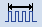
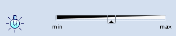

Установите, насколько яркими будут символы статуса.
жужжание
Забирай.
Здесь вы проверяете, когда услышите шум.
Ошибка: если этот ящик выбора активирован, каждый раз, когда происходит ошибка, звучит звуковой сигнал.
Необходимая операция: нет ошибки, но необходимо вмешательство пользователя (например, пластины должны быть загружены в лоток или пластина должна быть вставлена вручную).
Информация: информация сообщает о проблеме, которая возникнет на более позднем этапе.
Подтверждение: Звук подтверждает завершенное действие (например, была загружена печатная пластина).
Задержка
Здесь вы вводите время задержки (в секундах), после которого должен звучать зуммер, когда отображается сообщение.
Продолжительность

Именно здесь вы войдете в максимальное время (в секундах) вы услышите зуммер. Звонок не отключится, если вы введете «0» в эту коробку.
Яркость

Используйте слайдер, чтобы установить, насколько яркими будут символы статуса на Suprasetter A52/A74/A75.
Применять
Настройки отправляются на диктофон и включаются при нажатии «Применить».
отменять
Ваши последние входные данные отменяются, нажав «Отменить», если кнопка «Применить» не была нажата.